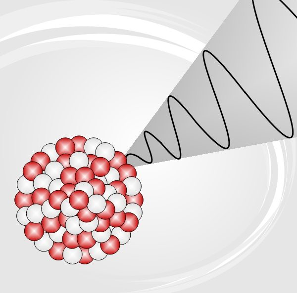
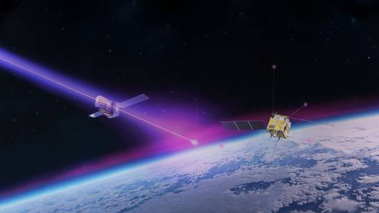

☢️ Rayos Gamma
1. ¿Qué son los Rayos Gamma?
Los rayos gamma son ondas electromagnéticas de muy alta energía y longitud de onda extremadamente corta. Se producen principalmente en procesos nucleares y cósmicos, y son invisibles al ojo humano.

Origen de los Rayos Gamma
- Desintegración nuclear: Los núcleos atómicos inestables liberan rayos gamma al alcanzar un estado más estable.
- Explosiones cósmicas: Supernovas, estrellas de neutrones y colisiones de agujeros negros generan rayos gamma de gran energía.
- Procesos artificiales: Reactores nucleares y aceleradores de partículas pueden generar rayos gamma controlados.
2. Propiedades de los Rayos Gamma
Son altamente penetrantes y pueden atravesar materiales densos, por lo que requieren blindajes especiales (plomo, hormigón) para proteger a seres humanos.
| Propiedad |
Descripción |
| Longitud de onda |
Menor a 0.01 nanómetros |
| Energía |
De 100 keV a varios MeV |
| Velocidad |
La velocidad de la luz (c) |
| Poder de penetración |
Alto, capaz de atravesar metales y concreto delgado |
3. Aplicaciones
- Medicina: Radioterapia para tratar cáncer y destruir células tumorales.
- Industria: Inspección de soldaduras, detección de fallas en materiales y esterilización de equipos.
- Ciencia: Observación de fenómenos astronómicos y experimentos de física de partículas.
4. Precauciones y Riesgos
La exposición directa a rayos gamma puede causar daños graves a la salud, incluyendo radiación interna y daño celular. Es esencial el uso de blindajes adecuados y protocolos de seguridad estrictos.
